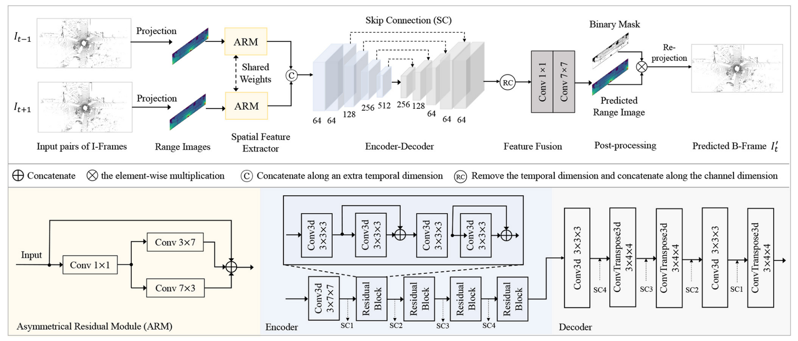
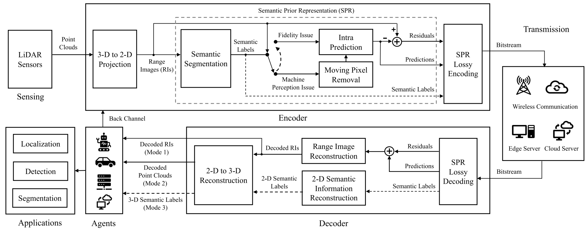
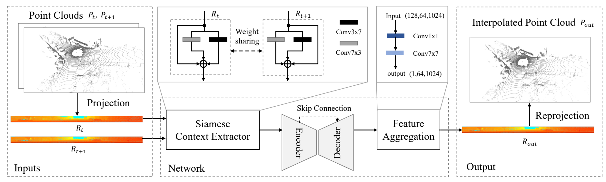
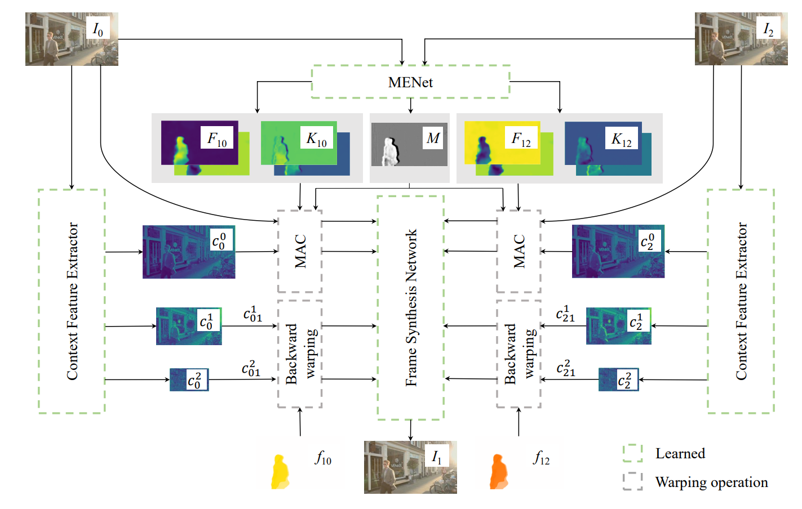

About
|
Lili Zhao (赵丽丽) is a researcher at China Mobile Research Institute, China Mobile Limited. She obtained her Ph.D. degree from the School of Information and Communication Engineering (SICE), University of Electronic Science and Technology of China (UESTC), where she was advised by Prof. Jianwen Chen. She was a joint Ph.D. student with the School of Electrical and Electronic Engineering (EEE), Nanyang Technological University, Singapore (NTU Singapore) under the supervision of Prof. Kai-Kuang Ma (Fellow of Singapore Academy of Engineering, IEEE Life Fellow). From April 2017 to March 2018, she was a visiting Ph.D. student at the University of Hong Kong (HKU), with Prof. Yik-Chung Wu. She was fortunate enough to work closely with Prof. Siwei Ma, Prof. Shanshe Wang, Dr. Falei Luo, Prof. Chuanmin Jia, Prof. Liaoyuan Zeng, Prof. Wenyi Wang, and Prof. Rumin Zhang. Her research interests include video and point cloud processing, particularly video/point cloud compression/coding, video/point cloud frame interpolation. She also works on some standard works, including IEC/ISO MPEG, AVS, ITU-T, etc. We are looking for research interns. Please feel free to contact me. |
News
- 2023.06: One paper on point cloud frame generation was accepted by ICIP 2023.
- 2023.04: One paper on point cloud frame interpolation was accepted by ICME 2023 Workshop.
- 2023.02: One paper "Deep learning-based quality enhancement for 3D point clouds: A survey" was accepted by Journal of Image and Graphics. [Github]
- 2022.11: Welcome Lancao Ren and Zhuoqun Sun joining as interns.
- 2022.09: One paper on video frame interpolation network was accepted by ACCV 2022.
- 2022.08: Join China Mobile Research Institute as a researcher.
- 2022.05: Finish PhD Dissertation Defense. Give many thanks to the dissertation defense committee: Prof. Siwei Ma (chairperson), Prof. Li Song, Prof. Zhan Ma, Prof. Yuxing Han, Prof. Yun Zhang, and Prof. Xinfeng Zhang.
- 2022.03: One paper on LiDAR point cloud compression using bi-directional prediction and floating-point coding was accepted to IEEE T-BC.
- 2022.01: One paper on LiDAR point cloud frame interpolation was accepted to ICASSP 2022.
- 2022.01: One paper on LiDAR point cloud compression using semantic prior representation was accepted to IEEE T-CSVT.
Experiences
- 2022.08 – now, Researcher, China Mobile Research Institute, Beijing, CN
- 2020.01 - 2022.07, Group leader, Coding group, MediaLab@UESTC, Chengdu, CN
- 2019.04 – 2019.08, Research intern, Pengcheng Laboratory, Shenzhen, CN
Selected Publications (Google Scholar Profile)
|

|
Real-Time LiDAR Point Cloud Compression Using Bi-Directional Prediction and Range-Adaptive Floating-Point Coding Lili Zhao, Kai-Kuang Ma, Xuhu Lin, Wenyi Wang, and Jianwen Chen. IEEE Transactions on Broadcasting, vol. 68, no. 3, pp. 620-635, Sept. 2022. Paper |
|

|
Real-Time Scene-Aware LiDAR Point Cloud Compression Using Semantic Prior Representation Lili Zhao, Kai-Kuang Ma , Zhili Liu, Qian Yin, and Jianwen Chen. IEEE Transactions on Circuits and Systems for Video Technology, vol. 32, no. 8, pp. 5623-5637, Aug. 2022. Paper |
|

|
Rangeinet: Fast Lidar Point Cloud Temporal Interpolation Lili Zhao, Xuhu Lin, Wenyi Wang, Kai-Kuang Ma, and Jianwen Chen. Proceedings of the IEEE International Conference on Acoustics, Speech and Signal Processing (ICASSP), 2022, pp. 2584-2588. Paper |
|

|
MVFI-Net: Motion-aware Video Frame Interpolation Network Xuhu Lin, Lili Zhao, Xi Liu, and Jianwen Chen Proceedings of the Asian Conference on Computer Vision (ACCV), 2022, pp. 3690-3706. Paper |
Have a wonderful day！